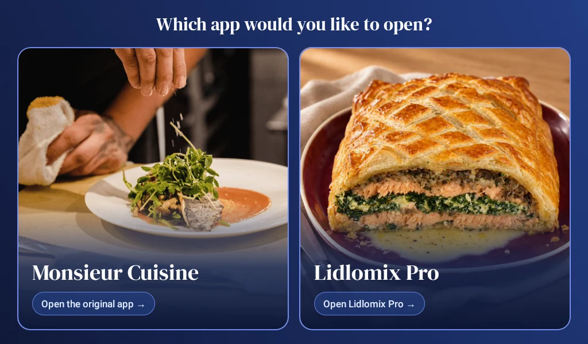
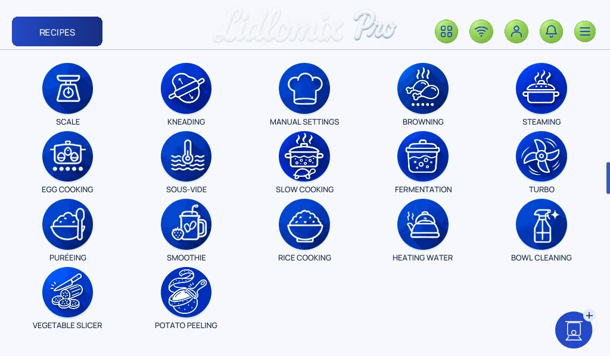
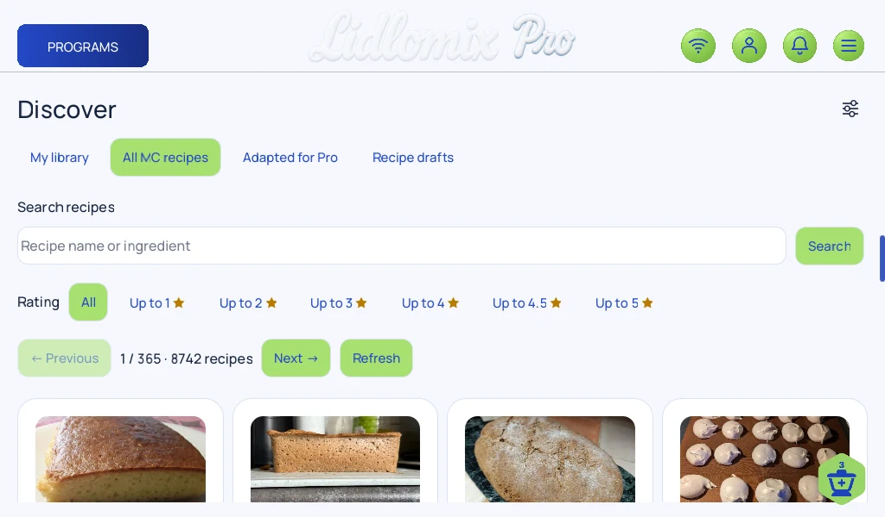

02 / Issue 0.15 ·
Two apps on one Connect
I had already started writing the app, but I still had no way to launch it on the robot. I found a lead in a video of someone playing games on a Lidlomix.
The video also showed a way to connect to the device. My connection kept dropping during the work, so I had to start over several times. Once Pro was running, I wanted to keep access to the factory Monsieur Cuisine app. That led to a startup screen with two tiles. I also tested it after a restart. How I connected to Android
1. Selection of applications

At first I had to turn the robot off and on at the switch to change apps. I later added a swipe in from the right to return to the app chooser, as well as a restart option in the menu.
2. Menu Lidlomix Pro

I redesigned the programme icons in the main menu. The slicer icon shows vegetables so its purpose is clear at a glance. I’m still designing and adding the icons used inside individual programmes.
3. Offline Directory

Changing the language in the factory app also changed which recipes were available. I assembled recipes from different country editions in one catalogue, translated them into Polish and removed duplicates. I kept variants for the different models and applied the settings guidelines I had worked out earlier.
The test Connect shows 8,613 recipes stored on the device. You can search and open recipe cards offline. Results come straight from the local database, without waiting to download a recipe.
4. Recipes Customized Pro
In the version described, the Adapted for Pro catalogue contained 6,203 recipes.